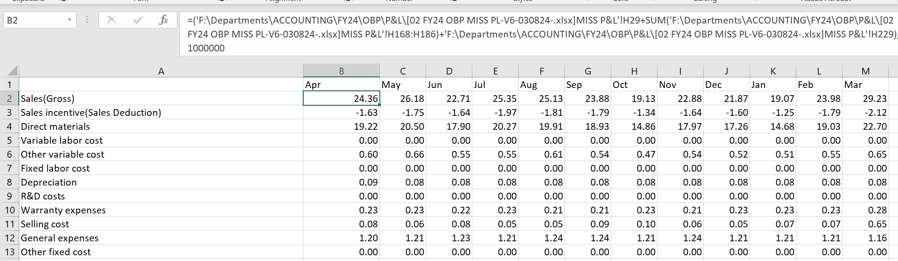

Dynamic File Update Using Parameters in Power Query
Project Summary:
In this project, I transformed a manual and formula-heavy Excel reporting process into an efficient automated system using Power Query's M language. I implemented a dynamic parameter that allows switching between different versions of a source file, reducing update time from minutes to just seconds.
Problem:
The previous solution used Excel formulas to refresh a secondary file based on a large source. Each version required manual updates and caused delays.
Solution:
- Used Power Query parameter to dynamically reference different source file versions
- Rebuilt the data flow logic in M to eliminate formulas and manual steps
- Reduced update time from ~5 minutes to under 10 seconds
Result:
The new setup improved data accuracy and saved hours per week. It is now scalable, reusable, and easy for others to adapt to new datasets.
Before vs. After (Visual Comparison)
Key M Code Snippet
// Power Query: Dynamic Source Selection
let
ParameterFilePath = ParameterFile,
Source = Excel.Workbook(File.Contents(ParameterFilePath), null, true),
Data = Source{[Item="Sales",Kind="Sheet"]}[Data]
in
Data
Tools used: Excel, Power Query (M language), Parameters